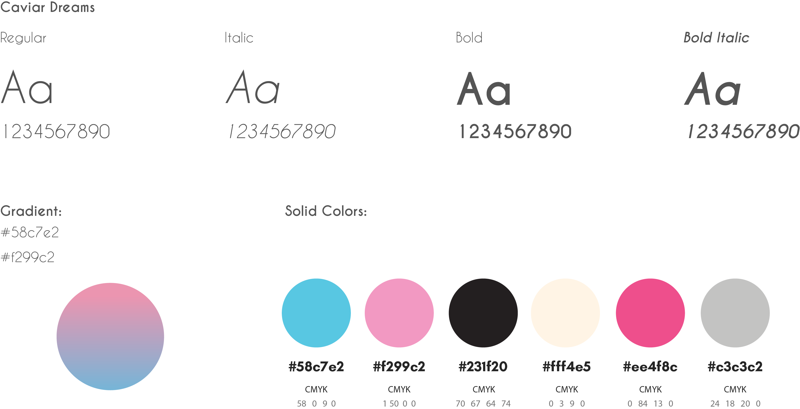
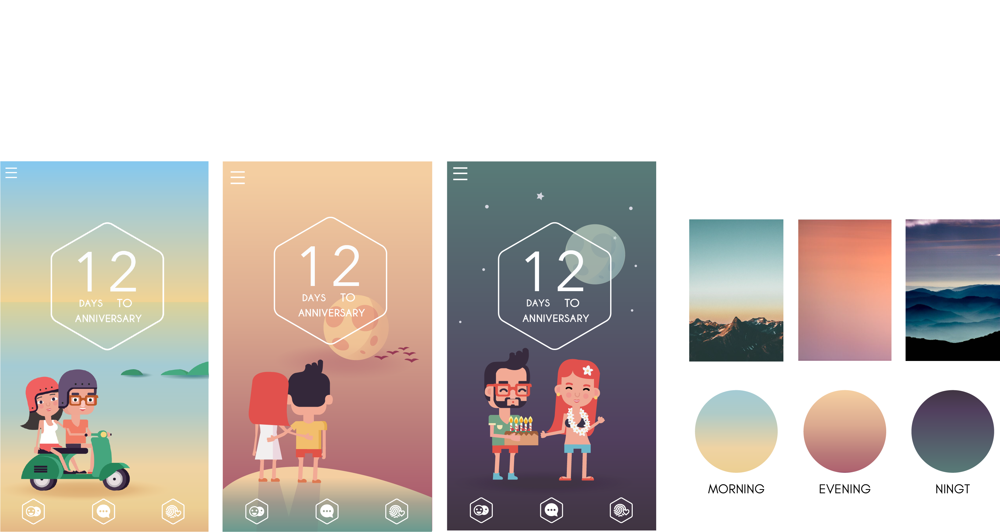
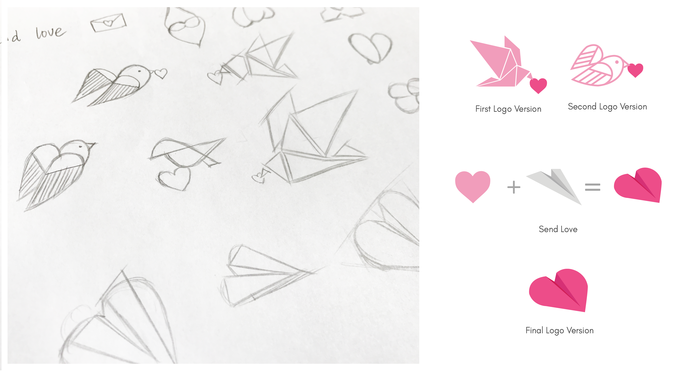
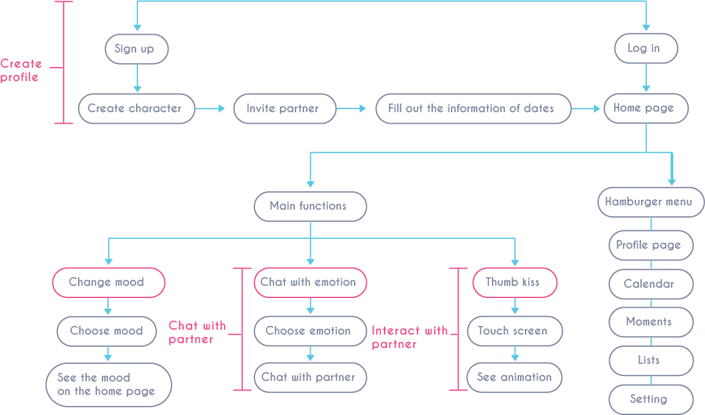
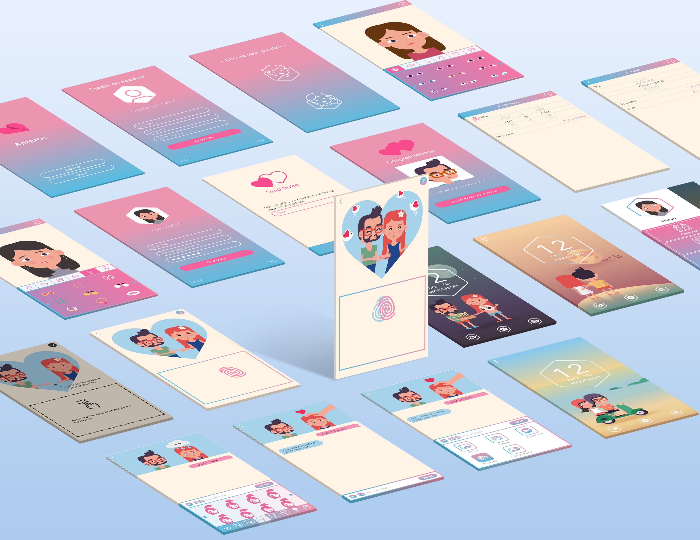

OVERVIEW
Anteros is an app which allows couples in long distance relati to connect and interact with each other in fun ways. It helps c communicate and understand each other better.
Role:
Ideation, conceptualisation, UX design and visual design
Medium
Phone app
Date:
2016
INSPIRATION
The reason why I chose this topic was for my friends. I have a few good friends who are in long distance relationships. They always have communication conflicts when they contact their partners because of the long distance.PROBLEMS
People who are in long distance relationships find:1. Their mood is easily ignored by their partners.
2. They can’t express emotions by messaging only.
3. Lack of interaction with their partners.
SOLUTION
My solution is to create an app on the smartphone that will helps couples to solve communication problems to build their affection in a fun and meaningful way.AMAZING FEATURES
Chat with Emotion
Texting with emotions, lets users send emotions to each other with adorable animated personal characters of themselves. It also contains body languages.Thumb Touch
Thumb Touch allows the couple to touch together through the app without actually having physical contact.Personalized Calendar
Schedule dates, automatic notification of important dates with special days - related scene.Real-time Background
The image of home page indicates a different scene that relates to the current time.Create profile
At the beginning of joining, users need to create their own avatar and invite their partners.Goal:
User create their own characters and enter information about their relationship.Chat with partners
Users send emotions to each other with adorable animated personal characters of themselves. It also contains body languages.Goal:
User use a fun way to show their mood to their partners.Interact with partners
Thumb Touch allows the couple to touch together through the app without actually having physical contact.Goal:
User use a fun way to interact with their partners.Style Guide
Real-time Background
Brand
OVERVIEW
Flowchart

